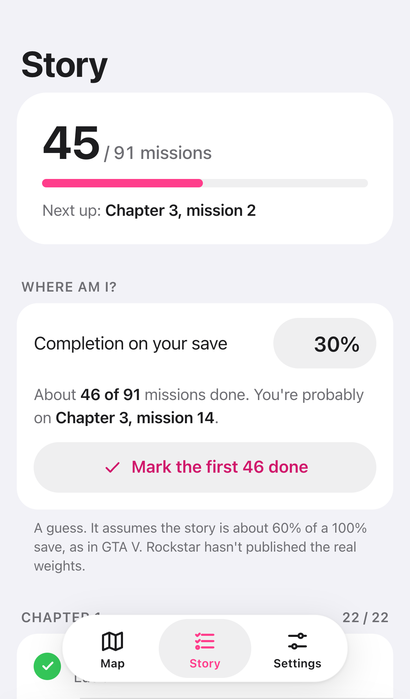
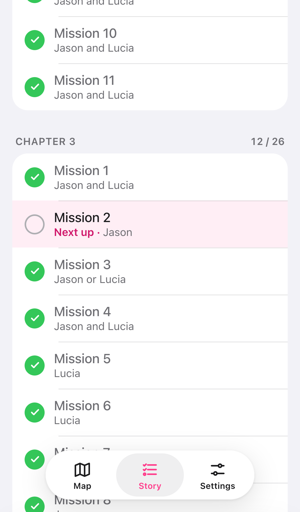
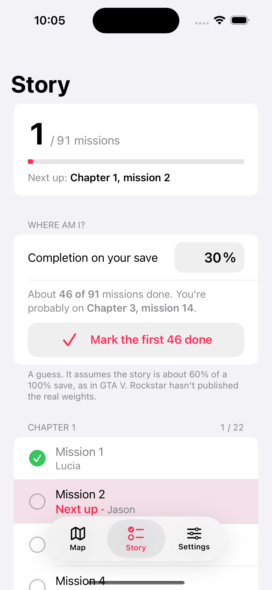

Know where you are in the story.
Type the % from your save and Flamingo guesses your next mission. Then tick missions off as you play.



- Save % in, next mission out. One tap ticks off everything before it.
- All 91 missions, five chapters. Heists marked, names hidden until you want them.
- Collectibles too. Count flamingos, watches and stunt jumps as you find them.